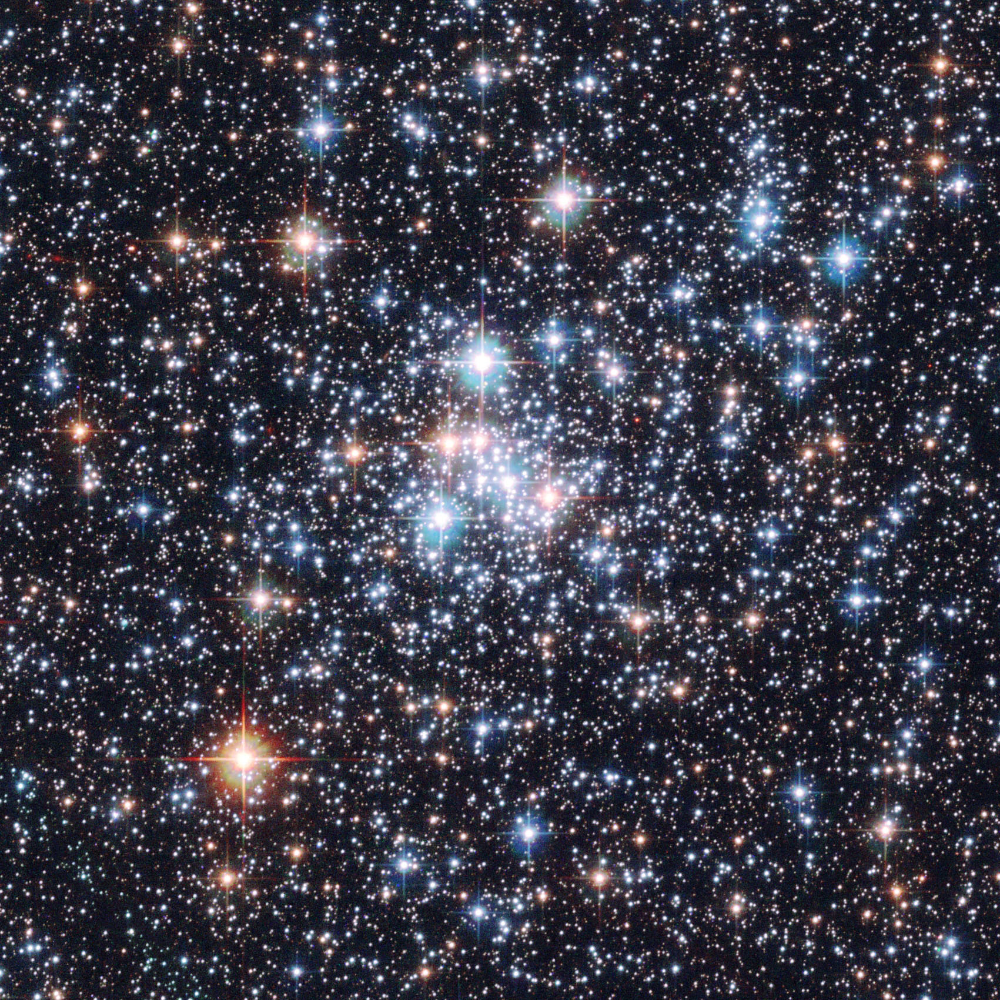
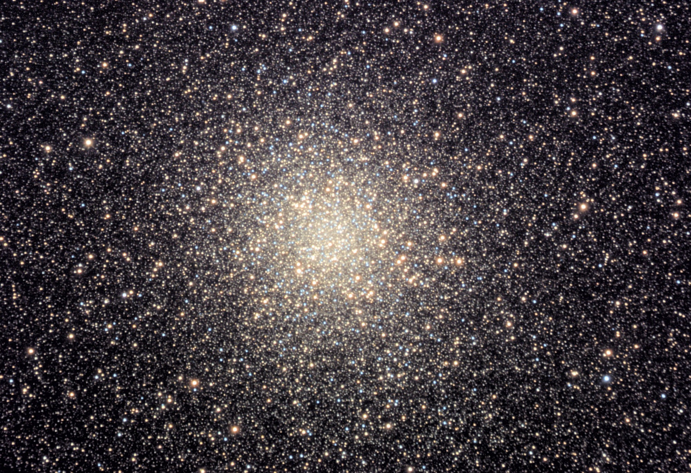

Maurizio Tomasi (maurizio.tomasi@unimi.it)
22 marzo 2024
Nel calcolo di ieri (tempo di rilassamento di un ammasso globulare) avevamo considerato solo le interazioni a corto raggio, mentre sono rilevanti anche gli scambi energetici a distanza.
Nello specifico, avevamo supposto che si abbia interazione quando la distanza tra due stelle sia inferiore al raggio collisionale r_c dato da \frac12 M_* v^2 \sim G \frac{M_*^2}{r_c}.
Ma anche a distanze maggiori di r_c ci sono scambi energetici, e noi li abbiamo trascurati.
Il problema è che noi abbiamo considerato solo le interazioni a corto raggio, ma il conto precedente ci dice che sono rarissime, perché la distanza media tra le stelle è 10⁴ volte maggiore del raggio collisionale.
Se un a.g. è virializzato, allora ciò è probabilmente determinato soprattutto dalle interazioni a lungo raggio:
Cosa avviene in una interazione dove r > r_c?
Supponiamo che lo scambio energetico avvenga solo lungo la linea rossa, e che esso introduca una componente perpendicolare \Delta v_\perp nella velocità v.
Possiamo stimare l’ordine di grandezza di \Delta v_\perp usando le leggi di Newton: M_* \frac{\Delta v_\perp}{\Delta t} = G \frac{M_*^2}{r^2}, da cui \Delta v_\perp = G \frac{M_*}{r^2/\Delta t} = G \frac{M_*}{r\,v} (\Delta t è il tempo necessario a percorrere il tratto rosso, che è lungo \sim r: quindi r / \Delta t \approx v).
Quali sono i valori plausibili da usare per r? Abbiamo già visto che negli ammassi globulari le interazioni a corto raggio (r \leq r_c) contano poco; ma ovviamente r < R (con R dimensione dell’ammasso).
In generale r_c < r < R.
Siccome \Delta v_\perp è funzione di r, dobbiamo calcolare un valore «medio» di \Delta v_\perp.
Calcoliamo il valore quadratico medio di \Delta v_\perp (la traiettoria della stella nell’ammasso è assimilabile a un moto Browniano): \begin{aligned} \left<(\Delta v_\perp)^2\right> &= \int_{r_c}^R (2\pi r\,\text{d} r)\,(v \Delta t)\,n\,\left(G\,\frac{M_*}{r\,v}\right)^2 = \\ &= \frac{2\pi n G^2 M_*^2}{v}\,\Delta t\,\log\left(\frac{R}{r_c}\right). \end{aligned}
Usiamo il teorema del viriale (assumendo quindi R e v calcolati sul sistema già rilassato: perché?): \log\frac{R}{r_c} = \log\frac{R v^2}{G M_*} \approx \log N, con N numero di stelle dell’ammasso.
Quindi \left<(\Delta v_\perp)^2\right> = \frac{2\pi n G^2 M_*^2}{v}\,\Delta t\,\log N.
Per grandi valori di \Delta t, la componente \Delta v_\perp diventa importante. Dopo quanto tempo \Delta v_\perp \approx v?
\begin{aligned} \left<(\Delta v_\perp)^2\right> &\approx v^2 \\ \frac{2\pi n G^2 M_*^2}{v}\,\Delta t\,\log N &\approx v^2 \\ \Delta t &\approx \frac{v^3}{2\pi n G^2 M_*^2\,\log N}. \end{aligned}
Usando le solite sostituzioni n = \frac{N}{\frac43 \pi R^3}, \quad N M_* G \approx R v^2, l’espressione di \Delta t diventa \Delta t \approx \frac{N}{\log N}\,\frac{R}{v}. Rispetto alla nostra stima iniziale \Delta t_r \sim N R / v, qui compare \log N al denominatore. Per un ammasso tipico, \log N \approx \log 10^6 \approx 14.
Il calcolo esatto porta alla formula \Delta t_r \approx \frac1{12 \ln (N/2)}\,\frac{N R}v, da cui si ottiene che \Delta t_r \approx \frac1{12 \ln (10^6/2)}\,\frac{10^6 \times 5\,\text{pc}}{16\,\text{km/s}} \approx 2\,\text{Gyr}, stavolta fisicamente plausibile.
Il calcolo svolto in questa lezione è spiegato nell’esercizio 1.14 di Cosmology and Astrophysics through problems (T.~Padmanabhan, Cambridge University Press, 1996).
Nel capitolo 10.7 del volume I di Theoretical Astrophysics (T.~Padmanabhan, Cambridge U. P., 2000) c’è la derivazione esatta della formula nel caso di un plasma (il potenziale Coulombiano dipende da r come quello Newtoniano).
The LF is a natural clock because the number of stars in a given luminosity bin decreases with time, since more massive stars evolve more rapidly than less massive ones. The fact that small differences in stellar masses correspond to large differences in evolutionary time explains the power of the LF clock…
Il testo di riferimento del corso (Kutner) sostiene che il tempo di vita degli ammassi globulari sia molto superiore a quello dell’Universo (\sim 200\,\mathrm{Gyr}).
In realtà recenti simulazioni al computer (Zonoozi et al., 2011, Zonoozi et al., 2014) mostrano che i processi di evaporazione sono un ordine di grandezza più rapidi: il tempo di vita medio diventa quindi confrontabile con quello dell’Universo.
| Ammassi aperti | Ammassi globulari | |
|---|---|---|
|  |  | |
| # di stelle | 10³–10⁴ | 10⁴–10⁶ |
| Dimensioni | 10 pc | 20–100 pc (core: 5 pc) |
| Gas e polvere? | Sì | No |
| Nebulose planetarie? | No | Sì |
| # di ammassi noti | 10³ | ~160 |
| Dove? | Disco | Alone stellare (~1% della massa totale) |
Nel Toro. N \sim 500, età 10^8 yr, R \sim 8 ly, D \sim 440 ly.
N \sim 100, età 10^8 yr, R \sim 12\div 25 ly, D \sim 1 600 ly.
Nello Scorpione. N \sim 80, età 2,2\times 10^8 yr, R \sim 18\div 20 ly, D \sim 800 ly.
{, Meynet, Mermilliod, Maeder. In: , Vangioni-Flam (ed.), Editions Frontières (1989).}
Gli ammassi aperti M 67 e NGC 188 sono tra i più antichi che si conoscano: gran parte degli ammassi hanno un’età inferiore a 10^9\,\text{yr}.
Dalla formula \Delta t_r \approx \frac1{12\log\frac{N}2} \frac{N R^{3/2}}{\sqrt{G M_*}} si ottiene per gli ammassi aperti che \Delta t_r \approx 10^8\div 10^9\,\text{Gyr}: quindi buona parte degli a.a. non sono rilassati.
…[the] evolutionary status [of open clusters] is much less clear. Half of open clusters disintegrate within 2\times10^8\,\text{yr} after birth [], a span corresponding to at most a few initial relaxation times. Not surprisingly, there is little observational signature that relaxation has occurred.
(Converse and Stahler, MNRAS 410, 2011)
Perché gli ammassi aperti hanno vita così breve? Alcune ragioni:
| Popolazione I | Popolazione II |
|---|---|
| Ammassi aperti (non solo) | Ammassi globulari (non solo) |
| Piano galattico | Alone sferico |
| Gas e polvere | Niente gas né polvere (ma nebulose pl.) |
| Alta metallicità | Bassa metallicità |